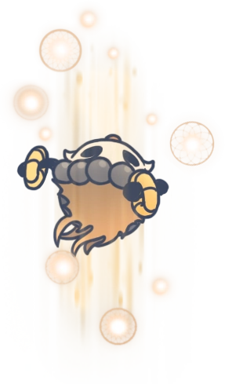
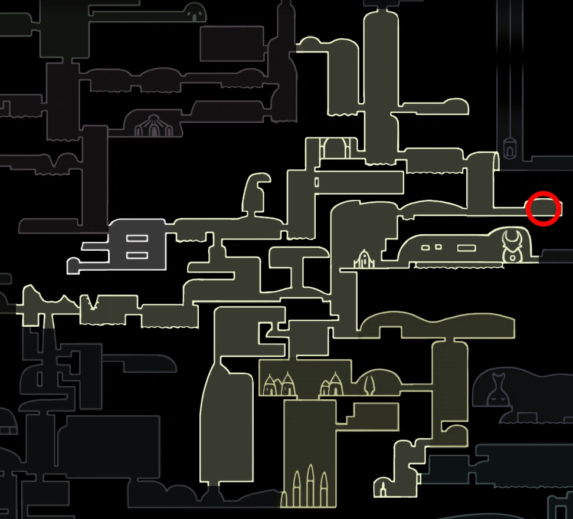

ELDER HU
 Boss In Action Browse More Bosses
Browse More Bosses
Elder Hu can be found in the Fungal Wastes, close to the entrances to Mantis Village and The City Of Tears.
Elder Hu was from outside Hallownest who came to the kingdom to use his abilities as a traveling sage and warrior to rid Hallownest of the infection. He went into the Fungal Wastes and made his way to Mantis Village where he encountered the mantises and the Mantis Lords. He believed that they were infected and attacked. However, they were much stronger and killed him. If the Knight talks to Elder Hu after defeating him, he realises that the mantises weren't infected and says that they were right to kill him.
Health:
250/420/550/600/650
Scaling with Nail Upgrades 0/1/2/3/4 respectively.
Moves: